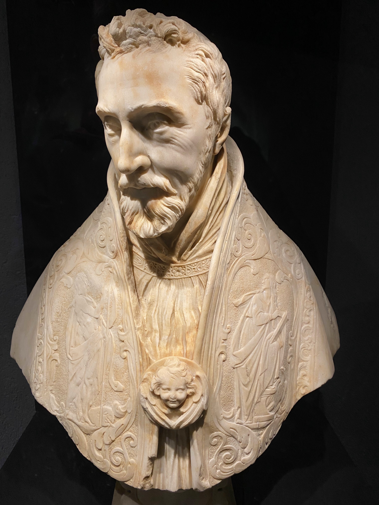

AGENDA
ACTIVITÉ DU JOUR

Visite commentée - exposition "Comme une image"
Les audioguides sont temporairement indisponibles.
L'application "Musée d'Aquitaine" disponible sur Android
→ Google Play
Du mardi au dimanche, de 11 h à 18 h
Fermé les lundis et jours fériés
Excepté le 14 juillet et le 15 août
Plein tarif : 5€
Tarif réduit : 3€
Gratuit pour les :
• Moins de 18 ans
• Scolaire
• Étudiants
• Personnes handicapés et accompagnateur
20 Cours Pasteur, 33000 Bordeaux
→ Google MapsMUSÉE - 05 56 01 51 00
ACCUEIL DE GROUPE - 05 56 01 51 04
ACCESSIBILITÉ - 05 56 01 51 03
musaq@mairie-bordeaux.fr
service.mediation.aquitaine@mairie-bordeaux.fr
service.accueil@mairie-bordeaux.fr
Visite commentée - exposition "Comme une image"
Les audioguides sont temporairement indisponibles.
L'application "Musée d'Aquitaine" disponible sur Android
Les salles sur la Préhistoire présentent le passé de l'Aquitaine depuis 500 000 ans. Riches de plusieurs milliers de silex, d'ossements, d'oeuvres d'art sur pierre ou sur os, de bijoux et d'objets en bronze, elles présentent l'évolution des différentes cultures humaines depuis les premières traces de l'homme en Aquitaine jusqu'à l'apparition de la métallurgie.
Le cénotaphe de Montaigne est un des principaux chefs-d'œuvre des collections du musée d’Aquitaine et classé au titre des monuments historiques. Il a été réalisé à la demande de sa veuve, Françoise de la Chassaigne, et sculpté en 1593, un an après sa mort, vraisemblablement par 2 ornementalistes, Prieur et Guillermain. Ce monument élevé à la gloire du mort ne contient pas de corps.

Dans le cadre des nouvelles mesures sanitaires, les audioguides
sont temporairement indisponibles. À la place, l'application
"Musée d'Aquitaine" est téléchargeable gratuitement depuis votre
téléphone ou votre tablette sur Google Play.
Le musée propose 2 audioguides :
Un audioguide pour enfants
Proposez à vos enfants de faire une visite originale et
ludique. Ils découvriront les oeuvres principales du musée et
voyageront dans le temps, de la Préhistoire au 20e siècle.
Accompagnés des voix de Basile, de Juliette et de leur tonton,
les enfants parcourent les espaces de collections, en autonomie,
et avec leur propre appareil.
L'audioguide du musée d'Aquitaine
Pour accompagner votre visite dans les collections
permanentes du musée, cet audioguide vous propose de découvrir
24 œuvres et pièces majeures et plusieurs photographies
descriptives par objet. Ainsi vous pouvez profiter des
collections à votre rythme sans rater les grands incontournables
de nos collections !
À tout moment pendant votre visite, vous pouvez
sélectionner différents modes de navigation depuis :
- un
plan,
- une liste,
- le numéro affiché sur le
parcours
L'audioguide est disponible en trois langues :
français, anglais et espagnol.
Les salles sur la Préhistoire présentent le passé de l'Aquitaine depuis 500 000 ans. Riches de plusieurs milliers de silex, d'ossements, d'oeuvres d'art sur pierre ou sur os, de bijoux et d'objets en bronze, elles présentent l'évolution des différentes cultures humaines depuis les premières traces de l'homme en Aquitaine jusqu'à l'apparition de la métallurgie.
ZLe cénotaphe de Montaigne est un des principaux chefs-d'œuvre des collections du musée d’Aquitaine et classé au titre des monuments historiques. Il a été réalisé à la demande de sa veuve, Françoise de la Chassaigne, et sculpté en 1593, un an après sa mort, vraisemblablement par 2 ornementalistes, Prieur et Guillermain. Ce monument élevé à la gloire du mort ne contient pas de corps.